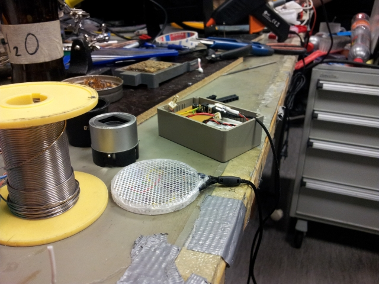
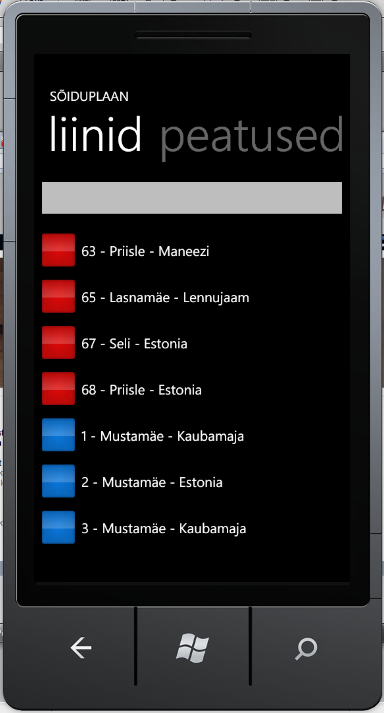
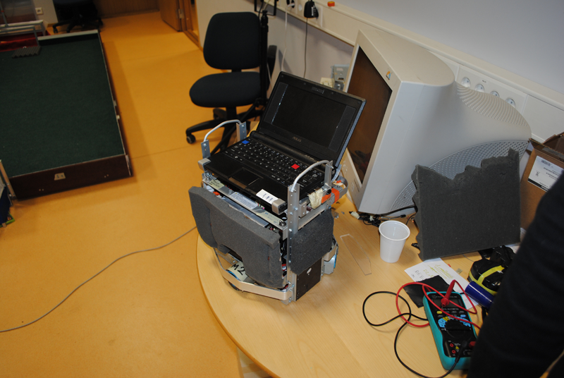

Portfolio
Released for Kaubamaja Group internal use. I wrote SQL procedures and Java classes (and UI) capable of generating hundreds of thousands of unique gift cards into the Oracle database, exporting them into txt files and encrypting them with SK authentication certificates so that the generated cdoc file could be decrypted by only the people whose identity codes were provided in the gift card application form. This can be done by using the private key on the recipients ID card. The whole process takes under a minute.
Technologies: Play Framework 1.2.7, HTML5, CSS, Javascript, PL/SQL (Oracle)
Interface for car services for managing customer data, automatically scheduling jobs, timetable and time tracking for mechanics.
Technologies: Ruby On Rails 3, PostgreSQL, RSpec
Half a year of hard work with Javascript, SVG and EKIOH. It never went live, but at least I know how to work on a really really limited hardware (450mHz processor + 256mb ram (from which usable memory is far smaller)), know how Motorola digibox works in general and know how to manipulate with KreaTV Application Platform.
Technologies: Javascript, SVG, PHP
Digital signing service for companies and individuals.
Technologies: Ruby On Rails, HTML5, CSS, Javascript, MongoDB, PostgreSQL
New version of allkiri.ee (not yet released) consists of backend API (rails-api) and standalone front-end (backbone.js). Test driven project.
Technologies: rails-api (rails 4, ruby 2), HTML5, CSS, Javascript, PostgreSQL, backbone.js, RSpec
Back-end system for calculating bonus points on Kaubamaja Group Partnercard. Java classes and XML schemas for loading data files (from cash registers) into the Oracle database, SQL procedures for calculating bonus points each night.
Administrative front-end interface for Kaubamaja Group internal use also written in Java.
Technologies: Spring Batch, Play Framework, HTML5, CSS, Javascript, PL/SQL (Oracle)
Back-end application for Säästukaart+ to manage credit card applications, contracts, cards, reports, account receivables, etc. 2013 summer we added loan and hire purchase features into the system with a sophisticated payment schedule. The system was designed for ETK Finance internal use.
Technologies: Ruby On Rails, HTML5, CSS, Javascript, PostgreSQL
Back-end Consumer Financing Service. Applications, offers, contracts, payments, reports, customer management.
Technologies: Ruby On Rails 2.3, Javascript, PostgreSQL
Postgre database backup tool. Places backups on the local disk and also to Amazon S3 cloud.
https://github.com/mlensment/backupper
Technologies: Bash
A project to make an ordinary reflector more fun. It consists of ATiny85 chip, temperature sensor, battery, LEDs, button and some other tiny components like capacitors, diodes, resistors. Reflector has 9 different programs. The most fancy one reads temperature and lights LEDs accordingly. When it's colder it glows blue and when its warmer it glows red. Other programs flash LEDs in different manners.
https://github.com/mlensment/led-reflector
Technologies: C

A game. The object is to guide a line through a maze. Each level gets faster and trickier. Click on the link above to try it out!
https://github.com/mlensment/guide-the-line
Technologies: Javascript
A game prototype for mobile browsers. The object of the game is to move the ball by tilting the mobile and avoiding randomly generated walls. It can be slow on older devices and velocity vector calculation still need some improvements.
Game proto may be found here. This may only work on mobile devices or this may not work at all. Tested with Android 2.3.3 Firefox browser and Android 4.1.2, also on Firefox. X and Y axis were inverted on Android 4 for some reason. Another presentation of the ball movement is here.
https://github.com/mlensment/guide-the-ball
Technologies: Javascript
A multiplayer game. Consists of server and client. Multiple clients can connect to the server and multiple games can run simultaneously. Server is written in NodeJS, client in Javascript.
https://github.com/mlensment/smake
Technologies: NodeJS, Javascript
My first game in javascript. Basic snake game which everyone has played on their Nokia 3310. Click on the link above to give it a try!
https://github.com/mlensment/snake
Technologies: Javascript
Public transport app for WP7 platform. Done as a group of 3 people. Unfortunately it never went live because our time and resources were limited.
https://github.com/msokk/Soiduplaan
Technologies: C#, Silverlight

A football robot for Robotex 2010. Built on top of Botmaster platform (provided by the IT College). It consists of Qt and OpenCV libraries.
Some footage from the competition: [www] We came fourth.
Wiki page
Technologies: C++

A simple game. The object of the game is to guide the hedgehog and reach as high as possible.
https://github.com/msokk/hype
Technologies: C#, XNA
Name: Martin Lensment
Position: Software Architect (former Software Engineer)
Date of birth: 29.08.1990
2013, 2012 - Coach at RailsGirls (International event for girls who want to know something about Ruby)
2012 - Frozen Rails conference is Helsinki
2011 - HTML5 camp
Many Garage48 HUB events
2012 - Tallinn University of Technology - Electronics and Bionics (Masters)
2009 - 2012 The Estonian Information Technology College - Software Engineering (Bachelors)